Headphone Splitter
Table of Contents
1 Introduction
- Disclaimer: The project is intended for learning purposes only, do not use in your own devices.
- You are going to make a headphone splitter inspired by and designed by A. Williams.
Wiring the input sockets
- Below are pictures of how the input sockets are connected.
- Ensure you are using stereo input sockets.
- Ask your teacher to check if you are not sure.
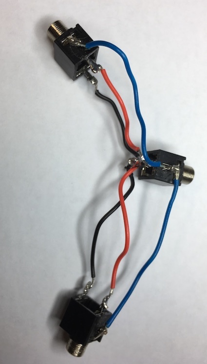 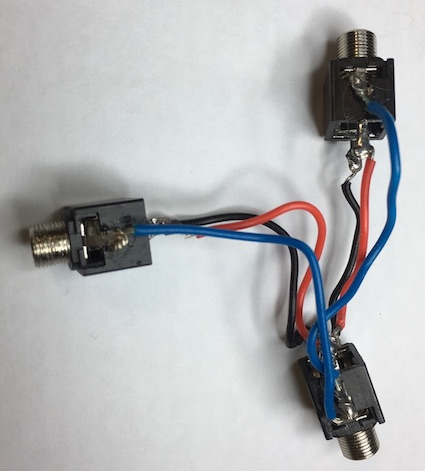
Building the housing
- You will need to laser cut the parts.
- The cutting sheet can be found on the open drive: Design Engineering/Extension tasks/Headphone splitter.
- You will need to change the black engrave colour to custom blue.
- Here are all the parts you will need once it is cut out.
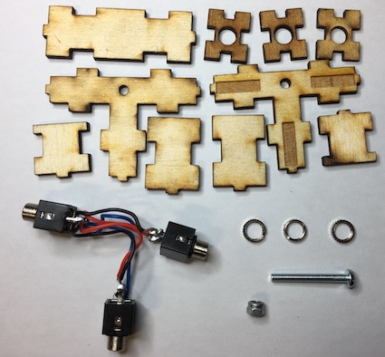
- The nuts on the end of the inout sockets need undoing and the end caps placed onto the and then the nuts need to be refitted.
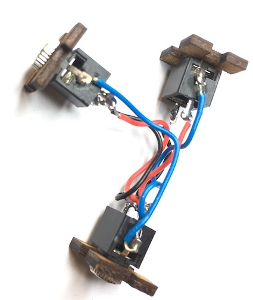 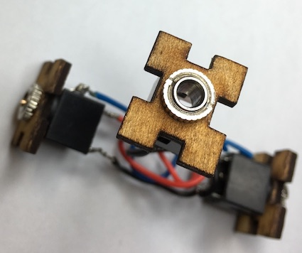
- You need to place a little glue on the side caps and then glue the end pieces in place.
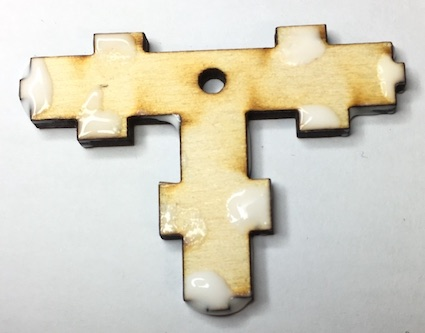 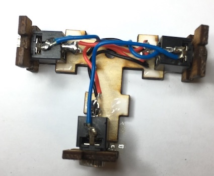
- Now the 2 sides need gluing in place.
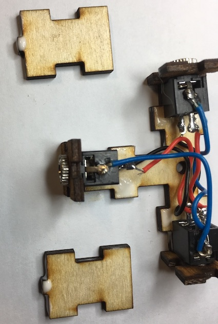
- The middle parts need adding and then follow the next few steps.
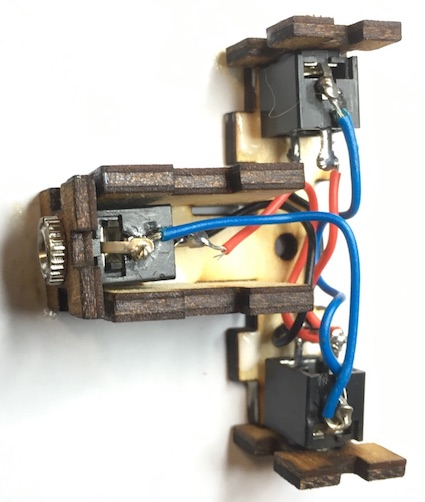 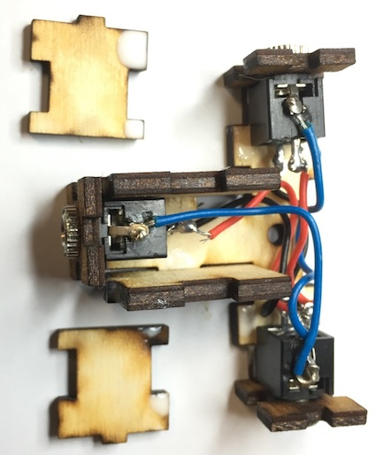 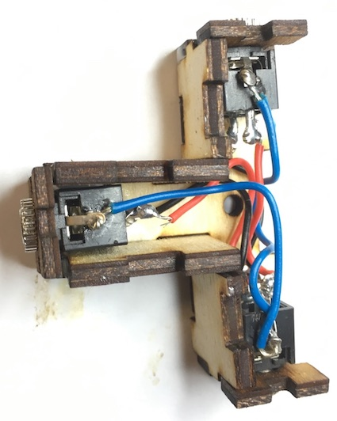 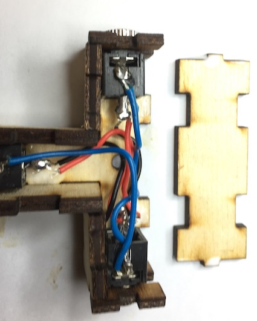 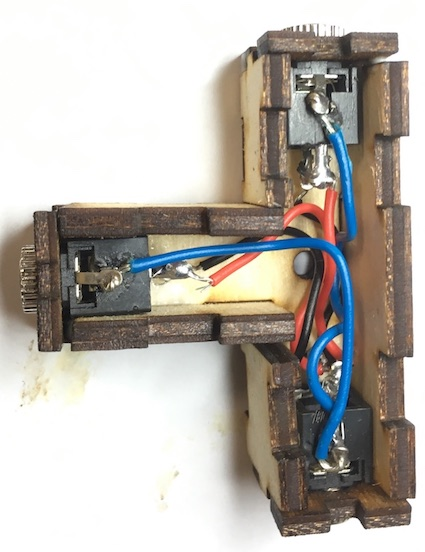 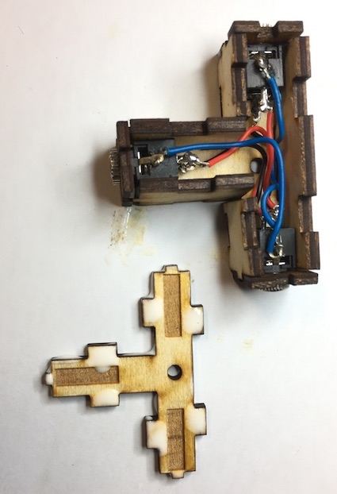 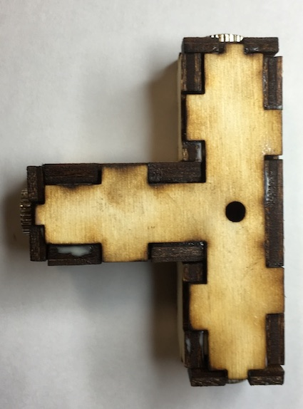
- You now need to push a M3 X 35mm screw through the splitter and tighten a nut on the other side.
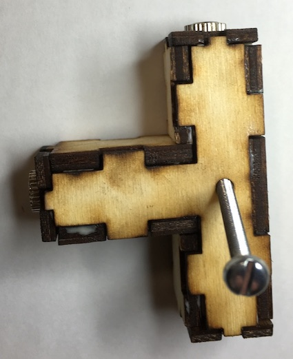 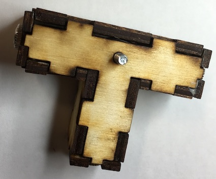 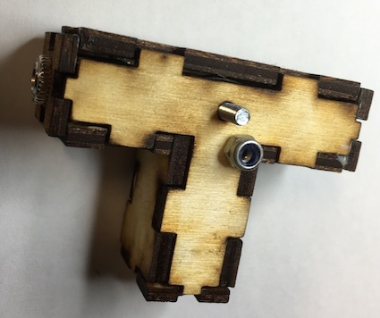 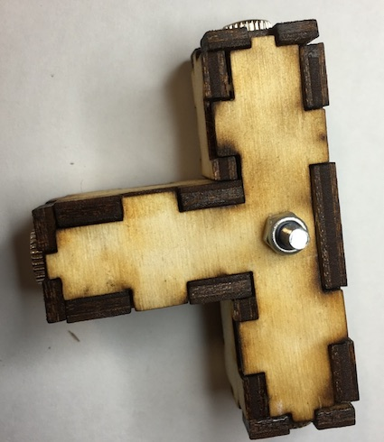
- You final headphone splitter will look like this.
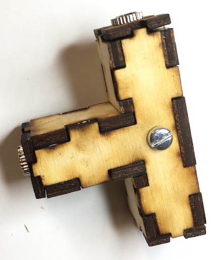 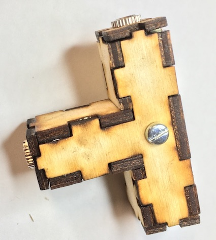
- You will need the 3.5mm stereo cables to connect your supposed devices.